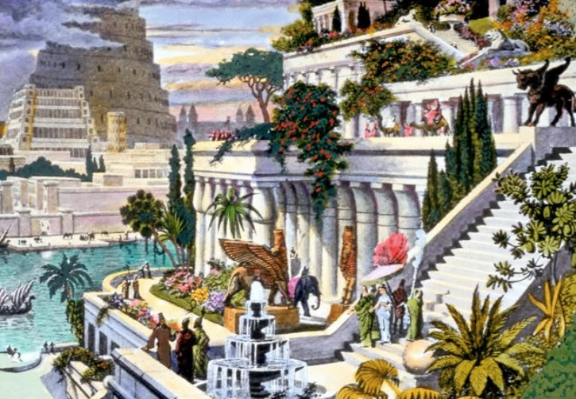

Kabantieji Babilono sodai (arba Semiramidės sodai) – sodų kompleksas, pastatytas senovės mieste Babilone, Eufrato pakrantėje. Laikomi vienu iš senovės septynių pasaulio stebuklų. Neišlikę. Manoma, kad šie sodai sukurti apie 600 m. pr. m. e. Pasak senovės graikų legendos, sodai buvo sukurti, nes karaliaus Nabuchodonosaro II žmona Amytis ilgėjosi savo gimtųjų namų Medijoje. Karalius negalėjo žiūrėti į liūdinčią žmoną ir nusprendė ją nudžiuginti didžiuliais sodais, priminsiančiais jai namus ir kad ji pasijustų it miškais apaugusiuose gimtinės kalnuose. Nelabai aišku kodėl kabantieji sodai vadinti ir Semiramidės, keliais amžiais anksčiau valdžiusios Asirijos karalienės vardu. Kabantys sodai turėjo būti prie upės, kad lengviau būtų juos drėkinti. Sodai buvo sukurti viena virš kitos buvusiose terasose, galėjusiose siekti 40 m aukštį. Visas statinys turėjo piramidės formą, nes aukščiau esančios terasos buvo mažesnės už žemiau esančias. Terasos buvo išklotos akmens luitais, užlietais švinu. Kiekviena terasa laikėsi ant stambių suremtų akmeninių gegnių, kurios sudarė kolonadą. Statinio pagrinde buvo didelis ketvirtainis pamatas. Į kiekvieną terasą suvežta tiek žemės, kad jose galėjo įsišaknyti ir dideli medžiai. Į sodus buvo sodinami įvairiausių rūšių augalai: figos, migdolai, riešutmedžiai, granatai, vijoklinės rožės, vandens lelijos ir daugybė kitų – buvo atgabenti iš visos imperijos. Sodams drėkinti buvo naudojamas Eufrato upės vanduo. Siurbliais pakeltas iki viršutinės terasos, vanduo tekėjo žemyn, taip vėdindamas ir drėkindamas sodus. Tarp terasų įrengtose salėse vyko puotos.
©Matthew's studio